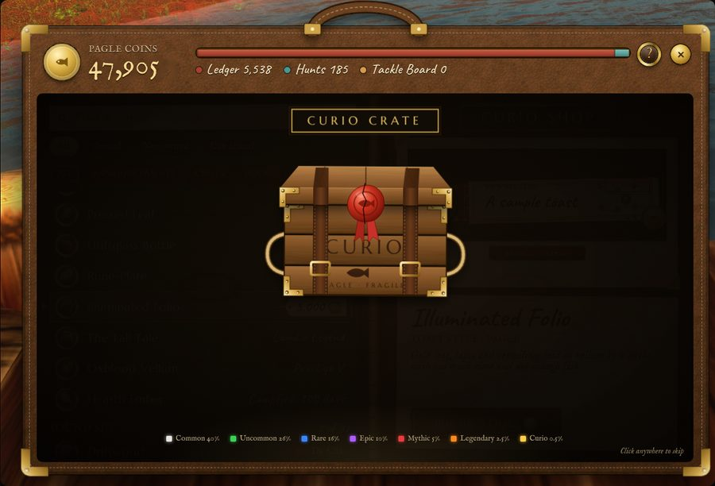
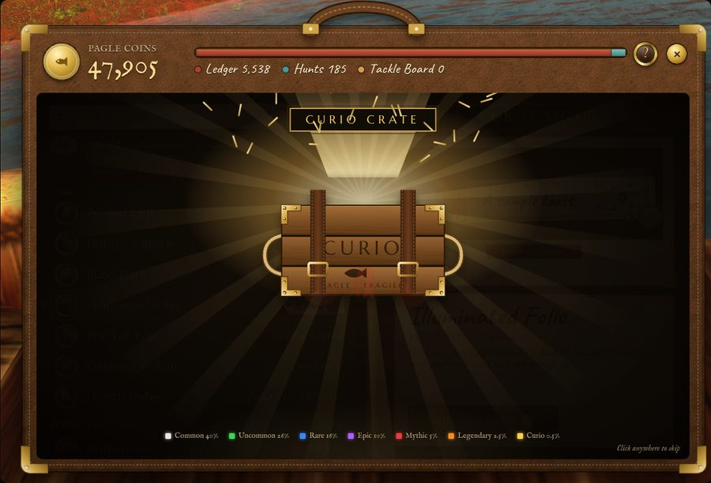
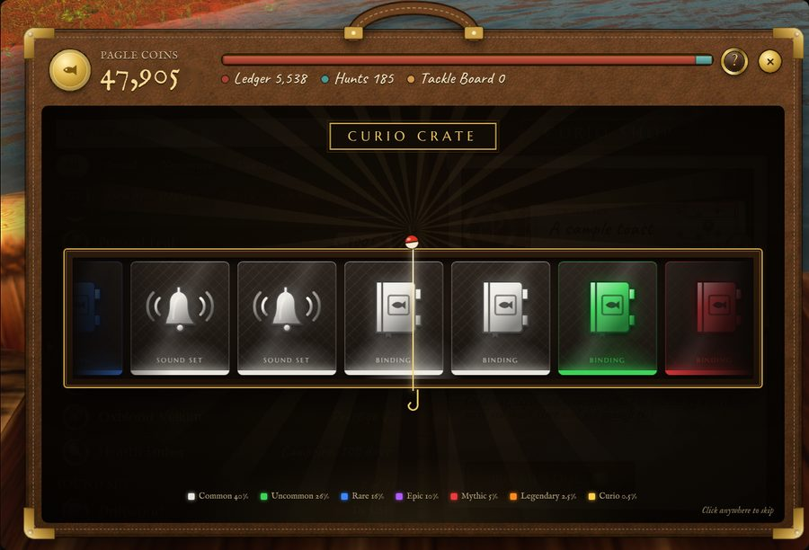
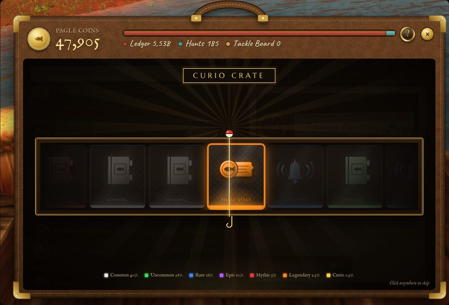
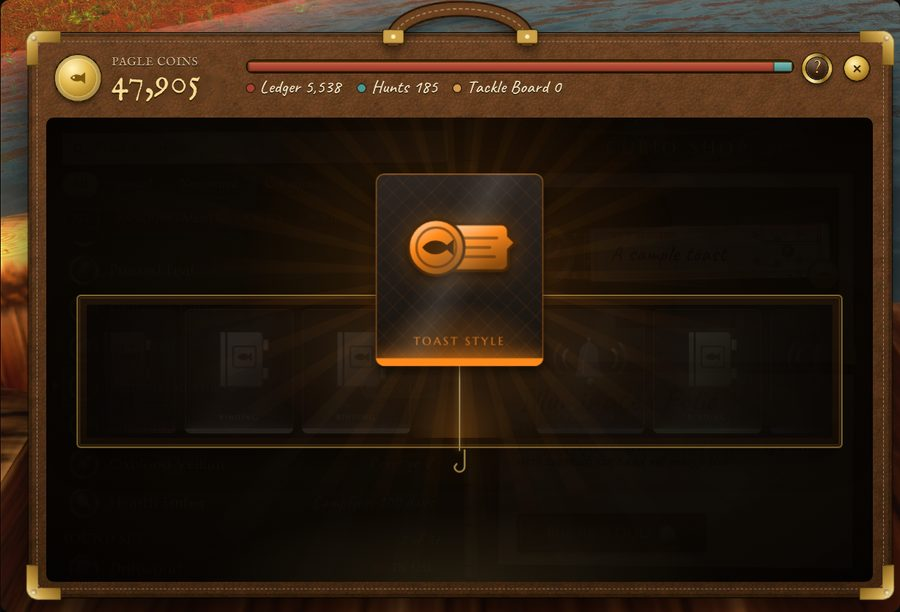
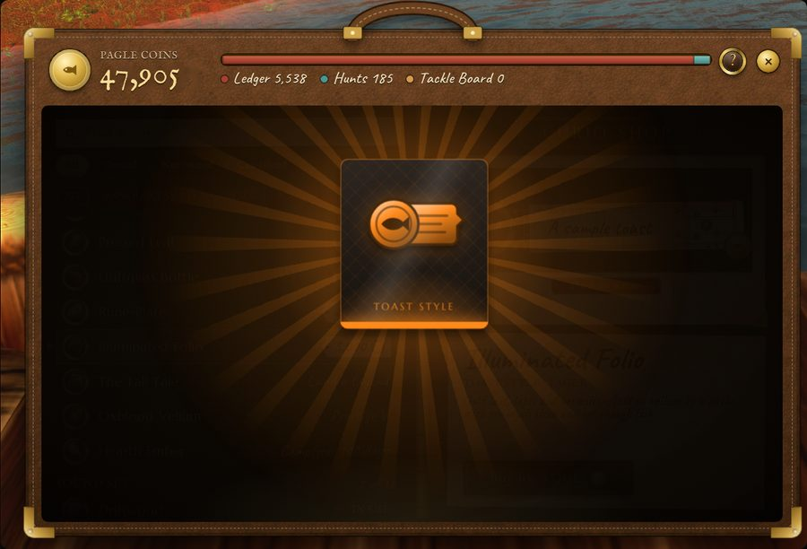
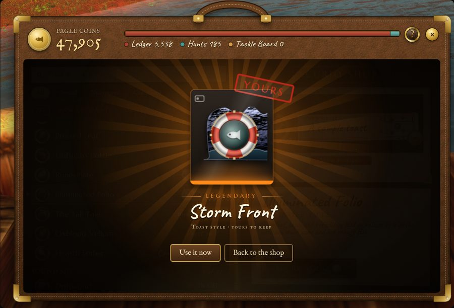
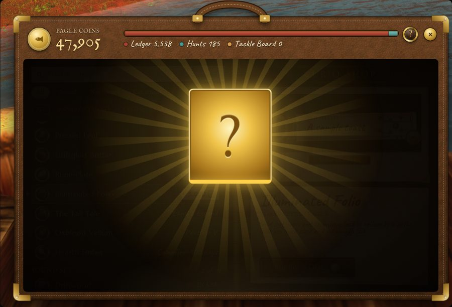
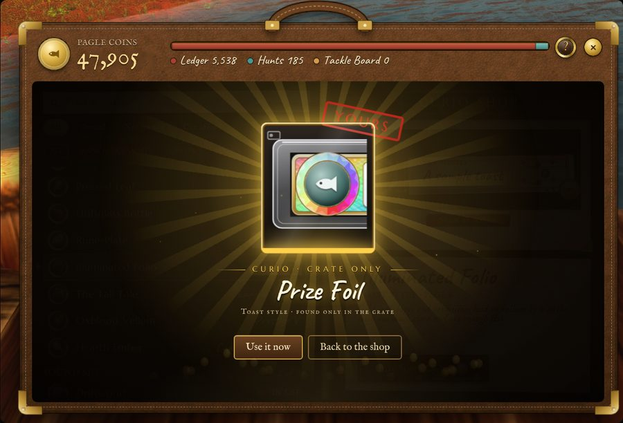

One look you don't own yet, by chance; the chances are on the crate.
From the moment Open it is pressed, it takes 9.7 seconds to land. The good shows at about 11.5 seconds for Common and 12.4 for Legendary. A click anywhere, or Esc, skips straight to the reveal. With motion off, the reveal shows at once.

1.0 sThe case darkens, the purse counts down, and the crate falls from above and squashes on landing. Dust puffs out, and the plaque and the odds appear. Sound: a thud.

2.4 sThree knocks, each harder, and the wax seal glows warmer each time. Then the seal splits, the straps snap and the lid flies off. Light pours out, straw sprays, and the reel opens out of the light. Sound: knocks, a crack, snaps, a whoosh.

3.3–9.7 sCards run right to left in a 6.4-second ease-out. Each card shows only a tier and a kind: an emblem for toast styles, bindings or sound sets, struck in the tier's colour. The light under the line takes the colour of the card passing. Sound: a tick per card, and the bobber dips.

9.7 sThe line stops wherever it falls inside the winning card, up to 60 px off centre. The other cards dim. By now the player knows the tier and the kind, but not the good. Sound: a soft chime.

10.4 sThe card rises out of the reel to the centre at 1.5 times its size, still showing its emblem, and the reel drops away.

10.4–11.6 sThe card holds a moment, longer for higher tiers. From Epic up it trembles and its light swells.

11.5–12.4 sThe card turns over to the good itself: half a turn up to Rare, one and a half from Epic. The tier's effects fire as the face comes round. Then the name, the YOURS stamp, and Use it now or Back to the shop. Sound: a whir per half turn, then the tier's chord.

CurioA crate-only good shows on the reel, and when it lifts out, as a gilded question mark. Its kind stays hidden too.

CurioTwo and a half turns, then the good. Coins burst out and the gold light holds. Sound: a bell and coins.
The six tiers, plus gold for goods only the crate holds. The odds are a starting point, not a proposal, and the tier each good gets in this prototype is a stand-in too.
| Tier | Odds | On landing |
|---|---|---|
| Common | 40% | Turns over at once. A soft halo in the tier colour and a two-note chord. |
| Uncommon | 26% | Turns over at once. Three-note chord; the rays turn a little brighter. |
| Rare | 16% | Waits a moment, then turns over. Four-note chord; brighter rays. |
| Epic | 10% | Trembles, then turns one and a half times. A burst of sparks, and a low note under the chord. |
| Mythic | 5% | Trembles longer. More sparks, embers rising for five seconds, a short shake and a low boom. |
| Legendary | 2.5% | Everything Mythic has, plus a white flash, a hard shake, full rays and glitter. |
| Curio | 0.5% | A gold card with a question mark lands. It spins two and a half turns and turns over to show the good, with a bell and a shower of coins. Only the crate holds these goods. |
CRATE_PITY = 8) built for its four-good pool. With the whole shop in the pool it needs restating: what it guarantees, and whether the reel shows it.SetVertexColor), so the art is three textures plus the gold card.PlaySound, as the shop uses now. The IDs still have to be chosen and checked in the client.